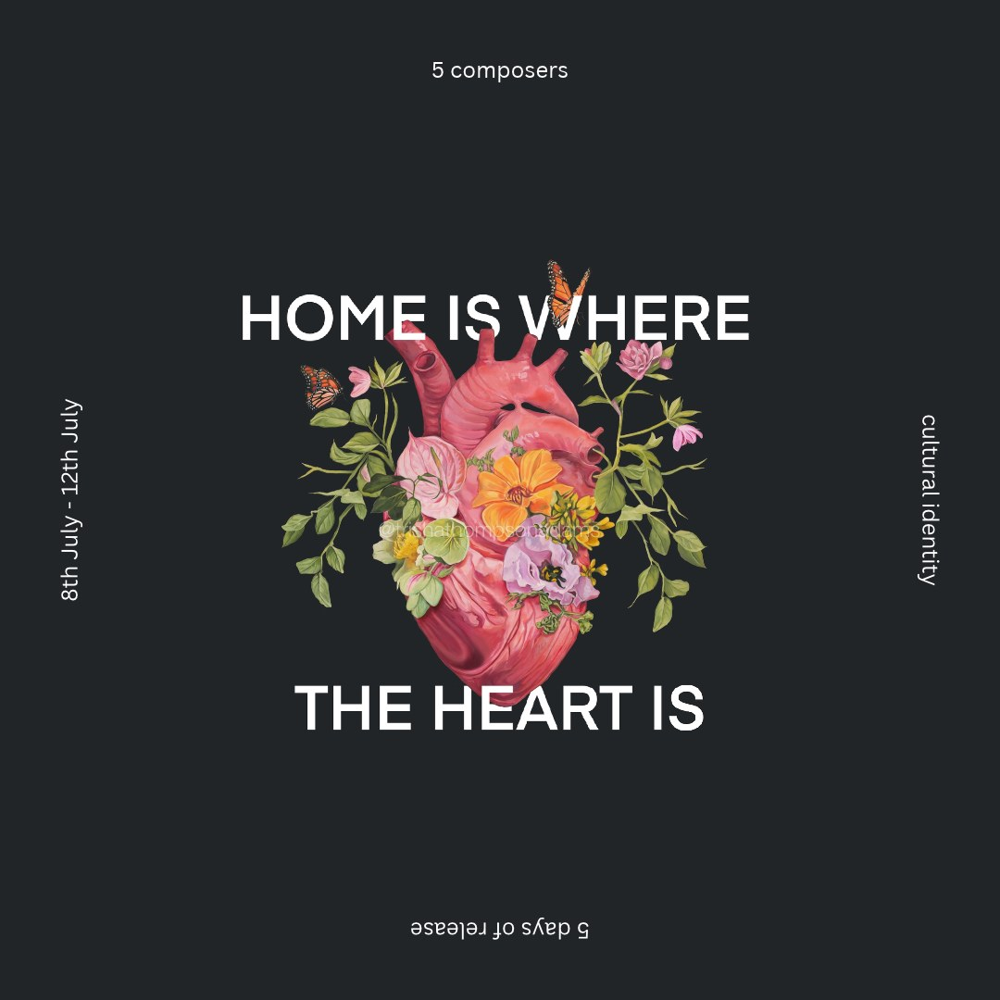

Projects
The Lost Woman
The Lost Woman is aimed at rediscovering classical music by women composers. It started in the year 2021, saw its first performance in April 2022 in Chennai as a piano concert, and in March 2024 in London as a chamber concert.
- LondonSunday 10 March 2024, St Mary’s Church, Hendon, for International Women’s Day
- Programme14 works by 14 women composers, written between 1593 and 1978, from Vittoria (Raffaella) Aleotti to Lili Boulanger and Florence Price
- YaashviDirector, conductor, pianist and arranger of two works for the Middlesex Philharmonic
Anubhuti
Anubhuti (feeling). An immersive collaboration between Indian classical music and unstylised movement improvisation: a unique sound-movement experience that encourages us to become aware of our bodies when we listen to music, extending to any sound around us.
- Performance“Inside the Music: what music feels like in our bodies”, Tuesday 16 April 2024, Grove C, Middlesex University, London
- MusicAlap, a vocal improvisation on the syllable ‘aa’, in four ragas: Durga, Yaman, Bhimpalasi and Bhairavi
- ArtistsYaashvi Kedia, music · Claire Loussouarn, movement
- PhotosCharlotte Johnston
Home Is Where the Heart Is
Home Is Where the Heart Is is a project promoting new music that expresses cultural identity. Yaashvi was its Artistic Director while Resident Intern at Middlesex University, in the Creative and Social Media Residency for the Music Directorate.
- RoleArtistic Director, during the Creative and Social Media Residency, June to July 2024
- ReleaseFive composers, released over five days, 8th to 12th July
- VideosSix performances, below

Other works
2025Orchestration for composer Kavi PauSouthbank Centre, London
2024Music with specially-abled learners, middle school music classes and the High School Musical ShowcaseGateway School of Mumbai